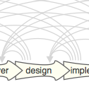
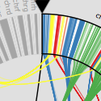
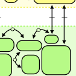
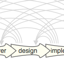
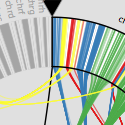
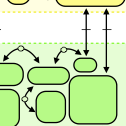

|
 |  |  |
|
 |  |  |
This course will take students through the process of conducting a design study, which is a problem-driven, collaborative process for conducting visualization research. You will learn how to design a visualization system for a real-world problem taking a user-centered, iterative design approach. Topics covered include methods for interviewing, extracting requirements, rapid prototyping, and evaluating deployed systems. There will be a number of lectures devoted to peer-review workshops.
There are several "collaborators" lined up who have some interesting data analysis challenges and are excited to work with students in the course -- you will select a collaborator and conduct a design study over the course of the semester. The goal of the course is to deploy a visualization system, and, depending on progress, write up the design study as a paper submission to a visualization venue.
| week | date | topic | date | topic | homework |
| 1 | 1/8 | Class overview | 1/10 | Introduction to design studies | |
| 2 | 1/15 | Design model | 1/17 | Design model | |
| 3 | 1/22 | Tips for talks | 1/24 | DS's: bio | |
| 4 | 1/29 | DS's: linguistics and space | 1/31 | DS's: time and networks | |
| 5 | 2/5 | DS's: play and Collaboration | 2/9 | Process models | |
| 6 | 2/12 | Observing | 2/14 | Contextual inquiry | |
| 7 | 2/19 | Abstraction | 2/21 | Domain characterization workshop | |
| 8 | 2/26 | no class | 2/28 | no class | Domain write-up | due Thurs |
| 9 | 3/5 | Abstraction workshop | 3/7 | Prototyping | |
| 10 | 3/12 | no class | 3/14 | no class | Abstraction write-up | due Tues |
| 11 | 3/19 | Prototyping workshop | 3/21 | Prototyping workshop | |
| 12 | 3/26 | Ben Fry talk + roundtable | 3/28 | Aesthetics | |
| 13 | 4/2 | Prototyping workshop | 4/4 | Prototyping workshop | |
| 14 | 4/9 | Janet Iwasa roundtable | 4/12 | no class | Full write-up | due Thurs |
| 15 | 4/16 | Write-up workshop | 4/19 | no class | |
| 16 | 4/23 | Project presentations |
| prerequisites | The prerequisites for this class are CS-5360/6630 Scientific Visualization, CS-6964 Information Visualization, or an equivalent course. You will need a broad understanding of visualization techniques and methods, predominately those for abstract data (tables, graphs, time series, etc). The final project will require you to build an interactive visualization system, so knowledge of a graphics API or language (like OpenGL or Processing) are required. If you have any questions please let me know. |
| required textbook | There are no required textbooks. All required reading will be available on this website. |
| grading | Grades in this course will be determined by:
There will be no final examination in this course. |
| late policy | For each day that an assignment is turned in late I will deduct 10% off the total possible points. That is, one-day late is 10% off, two-days is 20%, etc. For example, if you turn in an assignment 3 days late, the max number of points (out of 100) that you can receive is 70. |
| readings |
You should do the core readings before the lectures and participate in class discussions during both lectures and student presentations. Your participation grade is partially based on the required reading questions you submit before class as well as in-class discussion -- both during the professor's lectures, and during your classmates' presentations.
more details...
Content Grading
Submission Details 7960 submit QXXwhere XX is the lecture number (02-29). |
| paper presentations |
Throughout the course you will be asked to present several papers on the current lecture topic. You will be given at least one week notice about the papers. The purpose of this is to give you practice reading and analyzing research papers, and presenting your analysis in a clear way. You should expect to present at least twice throughout the semester.
more details...
Content Often papers on systems, techniques, or methods will be accompanied by a video or demo. I encourage you to make use of these if they are available. Presentation You may use my laptop for presentations. If you need to use anything except for PDF, Keynote, or PowerPoint, check with me in advance to make sure that the required software is installed on my machine. Grading
Submission Details 7960 submit slides |
| write-ups |
The goal of the course is to conduct visualization research using a design study methodology. As such, we will be working on a paper draft on your design study as one of the tangible outcomes of the class. Writing the paper will be broken up into pieces over the course of the semester.
more details...
Content Now that you've read a number of design study papers you should reflect on what you thought made for a clear, concise, and persuasive paper. Keep these things in mind as you work on your write-ups. I will give you feedback on each stage of writing. We will also workshop your final drafts as a class on the last day of the semester. Your final write-up must be in the IEEE VIS format, the details of which can be found in the Call For Papers. You are welcome to submit your domain and abstraction write-ups in whatever format you'd like. Domain write-up, due Thurs. Feb 28 Abstraction write-up, due Tues. Mar 12 Full write-up, due Thurs. Apr 12 Submission Details 7960 submit XXX write-up where XXX is the appropriate phase of writing. |
| slides |
L01-overview.pdf |
| required |
- MizBee:
A Multiscale Synteny Browser. Miriah Meyer, Tamara Munzner, and
Hanspeter Pfister. IEEE Trans. Visualization and Computer Graphics 15(6):897-904
(Proc. InfoVis 09), 2009. - Process and Pitfalls in Writing Information Visualization Research Papers. Tamara Munzner. Chapter from Information Visualization: Human-Centered Issues and Perspectives. Andreas Kerren, John T. Stasko, Jean-Daniel Fekete, Chris North, eds. Springer LNCS Volume 4950, p 134-153, 2008. |
| suggested |
- Wicked Problems in
Design Thinking.
Richard Buchanan. Design Issues: Vol. VIII, Number 2 Spring 1992. |
| slides |
L02-design-studies.pdf |
| required |
- Visualization Design and Analysis: Abstractions, Principles, and Methods.
Chapter 2: A Visualization Design Framework. Tamara Munzner, AK Peters, (to
appear 2012). - The Four-Level Nested Model Revisited: Blocks and Guidelines. Miriah Meyer, Michael Sedlmair, and Tamara Munzner. Workshop on BEyond time and errors: novel evaLuation methods for Information Visualization (BELIV), 2012. - An Empirical Model of Slope Ratio Comparisons. Justin Talbot, John Gerth, Pat Hanrahan. IEEE Trans. Visualization & Comp. Graphics (Proc. InfoVis), 2012. |
| slides |
L03-nested-model.pdf |
| Alex |
- Smooth
and efficient zooming and pannings. Wijk, J. J. Van, Nuij,
W. A. A., & Eindhoven, T. U. (1995). |
| Sean |
- Memorability
of Visual Features in Network Diagrams.Marriott, K., Purchase,
H.C., Wybrow, M., and Goncu, C. IEEE Transactions on Visualization
and Computer Graphics, 2012. |
| Hoa |
-
A User Study to Compare Four Uncertainty Visualization Methods for 1D
and 2D Datasets. Jibonananda Sanyal, Song Zhang, Gargi
Bhattacharya, Phil Amburn, Robert J. Moorhead, 2009. |
| Saquib |
-
Interactive Level-of-Detail Rendering of Large Graphs. Michael
Zinsmaier, Ulrik Brandes, Oliver Deussen, Hendrik Strobelt, IEEE Transaction on Visualization and Computer Graphics (TVCG), InfoVis 2012. |
| Konstantin |
-
Historygrams: Enabling Interactive Global Illumination in Direct Volume Rendering using Photon Mapping. Daniel Jönsson, Joel Kronander, Timo Ropinski, Anders Ynnermant, IEEE Transactions on Visualization and Computer Graphics (TVCG), Volume 18, Number 12, page 2364--2371 - December 2012. |
| Sam |
-
How Capacity Limits of Attention Influence Information Visualization Effectiveness. Steve Haroz and David Whitney, Visualization and Computer Graphics, IEEE Transactions on , vol.18, no.12, pp.2402-2410, Dec. 2012 |
| suggested |
- How
to Give a Talk. Paul N. Edwards - The secret structure of great talks. Nancy Duarte. - Hans Rosling, TED 2006 - Brian Cox, TED 2008 - Non-designer's Design Book. Robin Williams. 2008. |
| slides |
L05-tips-for-talks.pdf |
| bio | Saquib |
- ABySS-Explorer:
Visualizing genome sequence assemblies.
Cydney B. Nielsen, Shaun D. Jackman, Inanc Birol, Steven
J.M. Jones. IEEE Transactions on Visualization and Computer
Graphics (Proc InfoVis 2009) 15(6):881-8, 2009.
- Interactive Coordinated Multiple-View Visualization of Biomechanical Motion Data. Daniel F. Keefe, Marcus Ewert, William Ribarsky, Remco Chang. IEEE Trans. Visualization and Computer Graphics (Proc. Vis 2009), 15(6):1383-1390, 2009. |
| slides |
L06-biovis.pdf |
| linguistics | Hoa |
- Facilitating Discourse Analysis with Interactive Visualization.
Jian Zhao, Fanny Chevalier, Christopher Collins, and Ravin
Balakrishnan. Visualization and Computer Graphics, IEEE
Transactions on , vol.18, no.12, pp.2639-2648, Dec. 2012 - Constellation: A Visualization Tool For Linguistic Queries from MindNet. Tamara Munzner, Francois Guimbretiere, and George Robertson. Proc. InfoVis 1999, p 132-135. |
| space | Sam |
- BallotMaps:
Detecting Name Bias in Alphabetically Ordered Ballot
Papers.
Jo Wood, Donia Badawood, Jason Dykes, Aidan Slingsby. IEEE
TVCG 17(12): 2384-2391 (Proc InfoVis 2011). - Visual Exploration and Analysis of Historic Hotel Visits. Chris Weaver, David Fyfe, Anthony Robinson, Deryck W. Holdsworth, Donna J. Peuquet and Alan M. MacEachren. Information Visualization (Special Issue on Visual Analytics), Feb 2007. |
| slides |
L07-linguistics.pdf L07-BallotMaps.pdf L07-Improvise.pdf |
| time | Alex |
- Cluster
and Calendar based Visualization of Time Series Data.
Jarke J. van Wijk and Edward R. van Selow, Proc. InfoVis 1999, p 4-9.
- SignalLens: Focus+Context Applied to Electronic Time Series. Robert Kincaid. IEEE Transactions on Visualization and Computer Graphics (Proc. InfoVis 2010), 16(6):900-907, 2010. |
| networks | Sean |
- RelEx: Visualization for Actively Changing Overlay Network Specifications.
Michael Sedlmair, Annika Frank, Tamara Munzner, Andreas Butz
IEEE Trans. Visualization and Computer Graphics (Proc. InfoVis), 18(12): 2729-2738, 2012. - Pathline: A Tool for Comparative Functional Genomics. Miriah Meyer, Bang Wong, Tamara Munzner, Mark Styczynski and Hanspeter Pfister. Computer Graphics Forum (Proc. EuroVis 2010), 29(3):1043-1052 |
| slides |
L08-networks.pdf L08-time.pdf |
| play | Konstantin |
- SnapShot:
Visualization to Propel Ice Hockey Analytics.
Hannah Pileggi, Charles D. Stolper, J. Michael Boyle, and
John T. Stasko, IEEE Trans. Visualization and Computer
Graphics (Proc. InfoVis), 18(12), 2012.
- Living Liquid: Design and Evaluation of an Exploratory Visualization Tool for Museum Visitors. J. Ma, I Liao, K. Ma, J. Frazier. IEEE Trans. Visualization and Computer Graphics (Proc. InfoVis), 18(12), 2012. |
| required |
- Visualization
Collaborations: Reflections on What Works and Why.Mike
Kirby and Miriah Meyer, draft. |
| suggested |
- What
do
you mean?’ The importance of language in developing
interdisciplinary research.
L J Bracken (née Bull) and E A Oughton, Transactions of the
Institute of British Geographers, 31: 371–382. doi:
10.1111/j.1475-5661.2006.00218.x, 2006. - Going beyond Disciplines: The Meanings of Interdisciplinarity. Anders Karlqvist Policy Sciences , Vol. 32, No. 4, The Theory and Practice of Interdisciplinary Work (Dec., 1999), pp. 379-383. |
| slides |
L09-play.pdf |
| required |
- Design
Study Methodology: Reflections from the Trenches and the
Stacks.Michael Sedlmair, Miriah Meyer, and Tamara
Munzner. IEEE Trans. Visualization and Computer Graphics
(Proc. InfoVis), 18(12): 2431-2440, 2012. - Strategies for Evaluating Information Visualization Tools: Multi-dimensional In-depth Long-term Case Studies. Ben Shneiderman and Catherine Plaisant, Proc. AVI Workshop on BEyond time and errors: novel evaLuation methods for Information Visualization (BELIV), 2006, p 38--43. |
| suggested |
- 99%
Details. Podcast from 99% Invisible,
Sep 2010. - How to design breakthrough inventions. 60 minutes, Jan 2013. |
| slides |
| guest lecture | Prof. Jim
Agutter, assistant professor of design, University of Utah.
|
| required |
- An Ethnography Primer,
AIGA. - Six Things to Remember When Observing What People Do, D. School Stanford and IDEO. |
| suggested |
- Some Techniques for
Observing Users, Kathleen Gomoll. - Doing Design Ethnography, chapters: 1. Precis, 2. Ethnography and Systems Design, 3. Finding the Animal in the Foliage, and 6. Doing Fieldwork. Crabtree, Rouncefield, Tolmie. Human-Computer Interaction Series, Springer-Verlag London 2012. |
| templates |
Infovisguides.zip |
| required |
- Principles of Contextual
Inquiry. Hugh Beyer. 1997. Contextual Design: Defining Customer-Centered Systems. Morgan Kaufmann Publishers Inc., San Francisco, CA, USA. |
| suggested |
- The
One Conversational Tool That Will Make You Better At
Absolutely Everything. Fast Company,
Dec 2012. - Why Are Contextual Inquiries So Difficult? Jim Ross, June 2012. - Participatory design. Michael J. Muller and Sarah Kuhn. ACM 36, 6, 1993. - Contextual Design: Defining Customer-Centered Systems . Hugh Beyer and Karen Holtzblatt. Morgan Kaufmann, 1998. |
| slides |
L12-contextual-inquiry.pdf |
| required |
- What does the user want to see?: what do the data want to be?. A. Johannes Pretorius and Jarke J. Van
Wijk. 2009, Information Visualization 8, 3 (June 2009), 153-166. |
| suggested |
- Data
Abstractions. Information Visualization: Principles,
Methods, and Practice (pre-publication draft), chapter 3,
Tamara Munzner, AK Peters, (to appear 2012). - Polaris: A System for Query, Analysis and Visualization of Multi-dimensional Relational Databases (extended paper). Chris Stolte, Diane Tang and Pat Hanrahan. IEEE Transactions on Visualization and Computer Graphics, 8(1), Jan 2002. - The Eyes Have It: A Task by Data Type Taxonomy for Information Visualizations. Ben Shneiderman. Proceedings of the IEEE Conference on Visual Languages, 1996. - Low-Level Components of Analytic Activity in Information Visualization. Robert Amar, James Eagan, and John Stasko. Proceedings of InfoVis, 2005. |
| slides |
L13-abstraction.pdf |
| guest lecture | Prof. Jim
Agutter, assistant professor of design, University of Utah.
|
| required |
- Parallel
Prototyping Leads to Better Design Results, More Divergence,
and Increased Self-Efficacy. Steven P. Dow, Alana Glassco, Jonathan Kass, Melissa Schwarz, Daniel L. Schwartz, and Scott R. Klemmer.
ACM Transactions on Computer-Human Interaction, Vol. 17,
No. 4, Article 18, Publication date: December 2010. - Human-Centered Approaches in Geovisualization Design: Investigating Multiple Methods Through a Long-Term Case Study. D. Lloyd and J. Dykes. Transactions in Visualization and Computer Graphics, 17(12), pp. 2498-2507. |
| guest | Dr. Ben
Fry,
principal at Fathom.
|
| suggested |
- Connected China. |
| required |
- Emotion &
design: attractive things work better. Don Norman.
interactions 9, 4 (July 2002), 36-42. - Influencing Visual Judgment through Affective Priming. Lane Harrison, Aidong Lu, and Remco Chang. In Proc. ACM Human Factors in Computing Systems (CHI), 2013. |
| suggested |
- Apparent
usability vs. inherent usability: experimental analysis on the
determinants of the apparent usability. Masaaki Kurosu
and Kaori Kashimura.
Conference Companion on Human Factors in Computing Systems
(CHI '95). - What is beautiful is usable. N Tractinsky , A.S Katz , D Ikara. Interacting with Computers, Volume 13, Issue 2, December 2000, Pages 127–145. - Is beautiful really usable? Toward understanding the relation between usability, aesthetics, and affect in HCI. Alexandre N. Tucha, Sandra P. Rotha, Kasper Hornbækb, Klaus Opwisa, Javier A. Bargas-Avila. Volume 28, Issue 5, September 2012, Pages 1596–1607. |
| slides |
| guest | Dr. Janet Iwasa,
research assistant professor, Department of Biochemistry, U
of Utah School of Medicine.
|